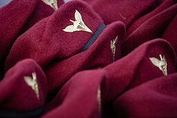

Доктрина застосування
Основними завданнями ДШВ визначені:
- порушення управління військами і роботи тилу противника;
- унеможливлення планомірного використання резервів противником;
- боротьба з повітряними десантами і угрупуваннями противника, що прорвалися;
- заняття і утримання важливих об'єктів і рубежів з метою забезпечення безперешкодного і своєчасного оперативного розгортання власних військ та сил у визначених операційних зонах, районах.
Крім основних завдань ДШВ можуть брати участь у боротьбі з незаконними збройними формуваннями, міжнародних операціях з підтримання миру і безпеки, заходах щодо здійснення захисту життя і здоров'я громадян та об'єктів державної власності за межами України та виконувати інші завдання, визначені законами України.
Історія
Рід десантних військ Збройних сил України був створений після проголошення незалежності України на основі частин і з'єднань повітрянодесантних військ СРСР, які дислокувалися на території країни на момент розпаду СРСР. З'єднання та частини входили до складу Збройних Сил України поступово, в період з 1 січня 1992 року до початку літа 1993 року.
1999 року Президентом України була затверджена дата Дня аеромобільних військ — 2 серпня.
27 липня 2012 підписано розпорядження[4] про присвоєння аеромобільним військам ЗС України назви «Високомобільні десантні війська», таким чином відновили радянську абревіатуру «ВДВ».
У 2015 році аеромобільні бригади Високомобільних десантних військ були підсилені танковими підрозділами, таким чином перетворивши їх на десантно-штурмові. Кожна з п'яти бригад мала отримати по танковій роті. Для посилення ВДВ були обрані танки Т-80, що завдяки газотурбінному двигуну мали перевагу у швидкості і маневровості у порівнянні з Т-64.
У 2016 році виведено зі складу Сухопутних військ та сформовано як окремий рід військ.
В травні 2017 року концерн Укроборонпром підготував чергову партію танків Т-80, які пройшли капітальний ремонт, для передачі десантним військам.
У червні 2017 року проведено перші від відновлення незалежності військові навчання зі стрільбами реактивної артилерії безпосередньо з поромів на воді: підрозділи 95-ї бригади форсували Дніпро.
Наприкінці жовтня 2017 року Командування ВДВ повідомило про затвердження ребрендингу та нової дати професійного свята. Назву змінено на: Десантно-штурмові війська, професійне свято: новостворені Десантно-штурмові війська відзначатимуть 21 листопада, в День архістратига Михаїла.
21 листопада 2017 року проведено урочисту церемонію на Михайлівській площі в Києві, під час якої п'ятий Президент України й військове командування вручили нову символіку:
- проведено церемонію заміни блакитного берета на берети кольору марун разом із новим беретним знаком.
- Вручено штандарт командувача десантно-штурмових військ
- Вручено прапор роду військ
- Встановлено текст клятви десантника
У травні 2019 року у військах офіційно дозволили використання парашутних систем Т-11, Intruder RA-360 и Hi-5, а також систем десантування вантажів "MicroFly II" и "FireFly" іноземного виробництва.
Традиції
- Професійне свято
З 2017 року новостворені Десантно-штурмові війська відзначають своє професійне свято 21 листопада, в День архістратига Михаїла — верховного командувача Божого війська у битві проти нечистих сил. Свято встановлено в Україні згідно з Указом Президента України «Про День Десантно-штурмових військ Збройних Сил України» від 21 листопада 2017 р. № 380/2017.
У попередні роки, в 1999—2017, День високомобільних десантних військ відзначався щороку 2 серпня. Свято встановили в Україні згідно з Указом Президента України «Про День аеромобільних військ» від 2 серпня 1999 р. № 937/99. На підставі Указу Президента України від 27 липня 2012 року № 457 «Про День високомобільних десантних військ» змінено його назву, відповідно до зміни назви роду військ.
- Прізвиська
Одне з прізвиськ українських десантників — єноти. Це знайшло відображення у сувенірній продукції десантних військ, ілюстраціях. Єнотами назвав десантників і президент України у вересні 2018.